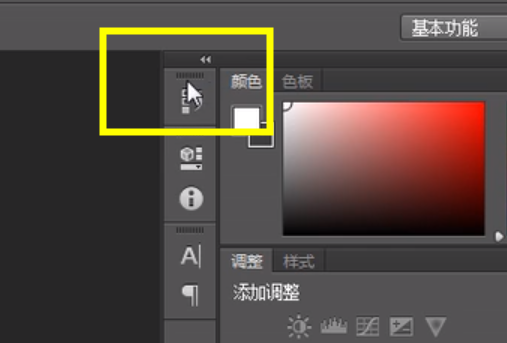

1、安装打开CS6。
2、改单位为像素px：右键——>界面选项——>单位与标尺——>标尺和文字均改为像素——>确定。

3、拖入图片，可以看到标尺(关于标尺的隐显Ctrl+R)，放大图片(Alt+滚轮)且在左下角显示当前缩放比例，恢复100%比例(Ctrl+1)，适应屏幕大小(Ctrl+0)。
4、选框工具(左边的工具栏里的第一个)，选中要测量的图——>F8(或单击右边圆里的感叹号)查看大小等信息。
5、隐藏标尺线/参考线(Ctrl+H)，鼠标置于标尺上拖出拖回即可操作标尺线。
6、取色器：单击左边工具栏里的倒数第三个工具打开前景色色盘进行取色。